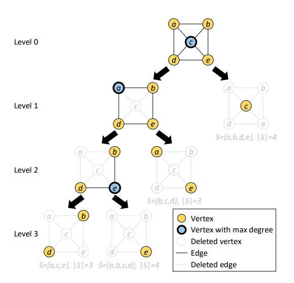
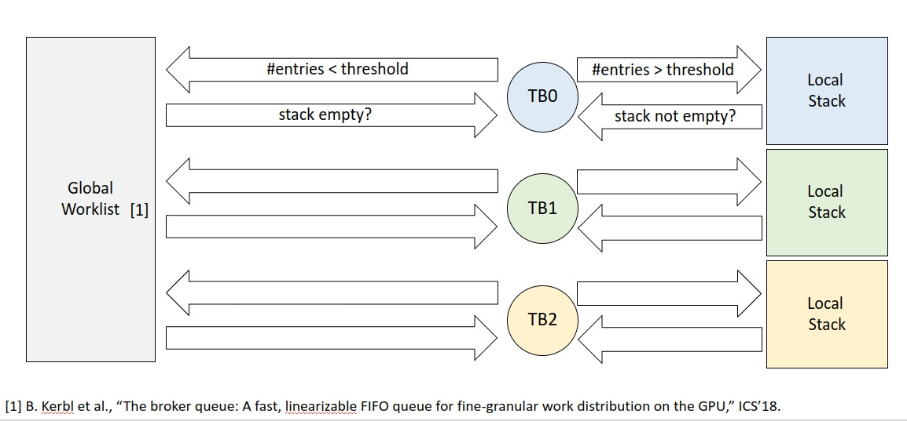

Adnan JaljuliParallel Vertex Cover Algorithms on GPUs In this work, we presented techniques for parallelizing exact algorithms for Minimum Vertex Cover and Parameterized Vertex Cover on GPUs. We proposed a hybrid approach for work distribution and dynamic load balancing where each thread block uses a local stack to traverse a sub-tree, but contributes branches of its sub-tree to a global worklist on an as-needed basis, extracting just enough parallelism for load balancing without incurring too much overhead. We implemented CUDA kernels for solving both MVC and PVC using our proposed approach, and show that they achieve substantial performance and load balance improvements, especially on difficult instances of the problem and on graphs with high average degree. [paper] [slides] [video] [code] Hierarchical Matrix Multiplication on GPUsLangaBuilt and developed a web application that offers asynchronous automatic speech recognition services through API.[Site] [API Docs] |
{kind=link}
{kind=link}